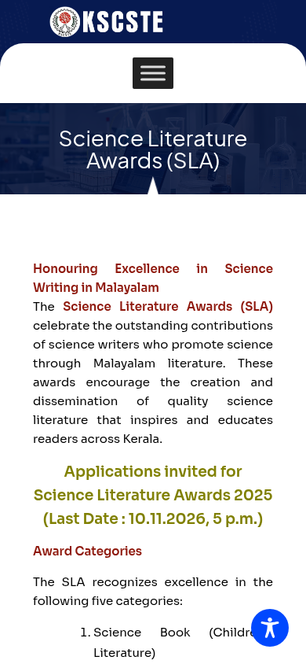
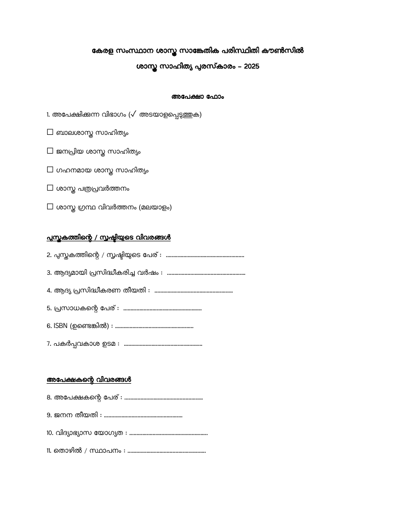

KSCSTE Science Literature Awards 2025: ₹50,000 for Malayalam science books, apply by 10 November
The Kerala State Council for Science, Technology and Environment (KSCSTE) is inviting applications for its Science Literature Awards 2025, for science writing in Malayalam. Each award carries ₹50,000 (about US$600), a plaque and a certificate. Completed applications must reach KSCSTE by 10 November 2026, 5:00 PM.

Official publisher artwork hosted by its publisher. Official source. Independent guide, not affiliated or sponsored. Artwork and trademarks belong to their owners.
Five categories
- Science book: children's literature
- Science book: popular science
- Science book: in-depth science
- Science journalism
- Science book: translation into Malayalam
What the winner gets
- ₹50,000 for each award
- A plaque and a certificate
- The award is handed over at a function organised by KSCSTE
What is eligible
- Authors or publishers can apply directly, in the prescribed form only
- Works first published in 2025. Proof of the first publication year is needed
- Reprints, revised, enlarged and later editions are not considered
- Textbooks used in any education syllabus are not considered. Abridged versions or a few chapters alone are not considered
- A book can be entered in one category only. To enter more than one category, send a separate application for each
- Translation category: the translation must be a proper Malayalam translation of a science book, from any language. Send a copy of the original, and copyright or permission papers where needed
What to send
- The filled application form
- Three copies of the book or work
- The author's detailed biodata
- Proof of first publication year, and any supporting papers
Post it to the Director, KSCSTE, Sasthra Bhavan, Pattom, Thiruvananthapuram 695004, so that it arrives by 10 November 2026, 5:00 PM. Late applications are not considered.
How to apply: step by step
Checked on the live KSCSTE page on 19 October 2026. This award has no online portal - the application goes by post.
- Open the official KSCSTE Science Literature Awards page: kscste.kerala.gov.in/science-literature-awards-sla. It shows "Applications invited for Science Literature Awards 2025 (Last Date: 10.11.2026, 5 p.m.)".
- Download the application form (PDF) from the same page and print it. Read the notice (English) and guidelines (Malayalam) PDFs first.
- Tick your category and fill the form: book/work details (title, year of first publication, publisher, ISBN, print run) and author details (name, date of birth, address, phone).
- Gather the enclosures: three copies of the book or work, the author's detailed biodata, proof of first publication year, and any supporting papers.
- Post the filled form and enclosures to: Director, KSCSTE, Sasthra Bhavan, Pattom, Thiruvananthapuram 695004. It must arrive by 10 November 2026, 5:00 PM - late applications are not considered.
- Questions: slakscste@gmail.com or 0471-2548244.


Video guides
We searched YouTube on 19 October 2026 for a step-by-step application video for this award in English and in Malayalam. We could not verify one that covers this award and its current process, so we are not linking any rather than risk an unrelated video.
How winners are chosen
An expert committee reviews the entries and KSCSTE takes the final decision. Only the selected winners are informed officially. KSCSTE can withhold an award in a category if no suitable work comes in, and can change the terms.
Questions: slakscste@gmail.com or 0471-2548244, as listed on the KSCSTE page. We read the KSCSTE award page, the English notice and the guidelines on 16 October 2026. We did not apply.
Sources: KSCSTE Science Literature Awards page, Notice (English PDF), Guidelines (Malayalam PDF), Application form (PDF), Announcement, 15 Oct 2026. Checked 16 October 2026; apply steps and video search re-checked 19 October 2026. This is an AiCoN explainer, not a government publication.